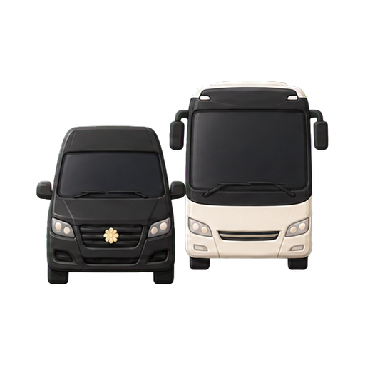
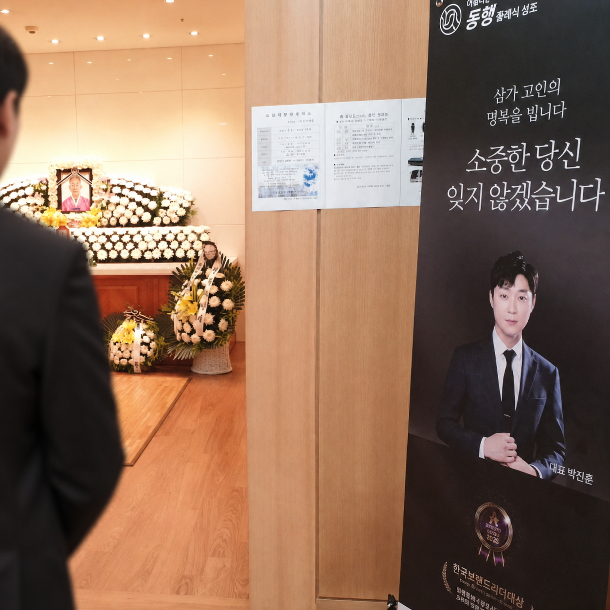
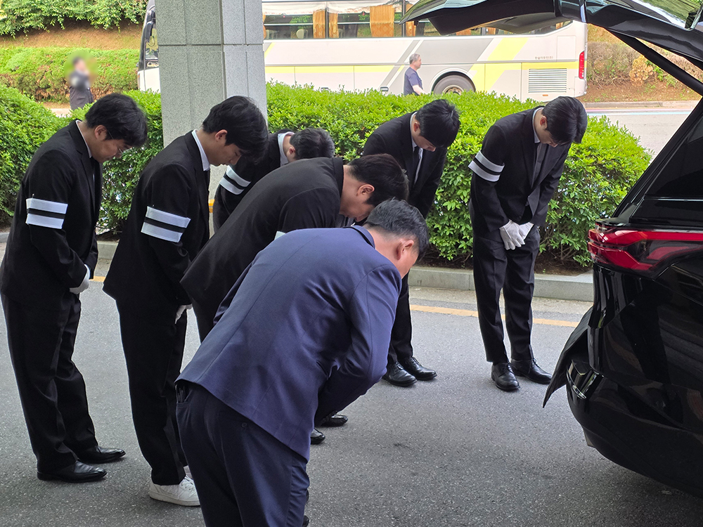
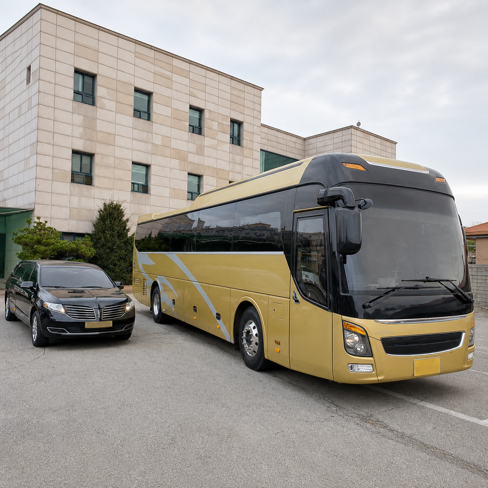
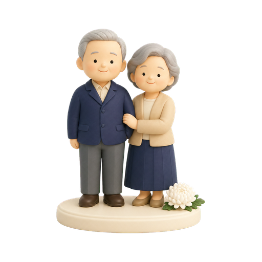

에프원의전을 믿을 수 있는 이유
기업과 임직원 가족을 위한 장례, 필요한 절차와 비용부터 차분히 안내합니다.
후불상조는 어떤 서비스인가요? 선불상조와 무엇이 다른가요?
후불상조는 별도의 가입이나 사전 납입 없이 장례가 발생했을 때 이용하는 서비스입니다. 선불상조와 달리 필요한 서비스만 선택해 이용한 뒤 비용을 지불합니다.
가격이 저렴한 후불상조 업체를 선택해도 괜찮을까요?
가격만으로 판단하기보다 기본 상품에 포함된 항목과 추가 비용을 함께 확인해야 합니다. 처음 안내한 금액은 저렴해도 장례 과정에서 비용이 추가되어 최종 부담이 커질 수 있습니다.
믿을 수 있는 후불상조 업체는 어떤 기준으로 선택해야 하나요?
운영 이력과 장례 대행 경험, 비용 안내의 투명성을 확인하는 것이 중요합니다. 에프원의전은 기업 전문 장례의전으로, 기업과 임직원 가족에게 필요한 장례 절차와 비용을 안내합니다.
이용한 만큼만 결제합니다
선납금 없이 필요한 서비스만 선택하고, 사용한 항목만 확인 후 정산합니다.
선불식 상조
가입 후 매월 회비를 미리 납부하는 방식입니다.
- 긴 납입 기간수년에서 수십 년, 회비를 오래 내야 총 납입액이 채워집니다.
- 중도 해약시, 불이익중간에 해지하면, 그동안 낸 돈을 전부 돌려받지 못할 수 있습니다.
- 계약 및 보상 조건 확인계약 전 서비스 이행과 소비자 피해보상 조건을 확인해야 합니다.
에프원의전 후불 상조
필요한 장례 서비스만 장례 이후 결제합니다.
- 부담 없는 시작회원가입도, 선납금도, 매달 내는 돈도 없이 필요할 때 바로 시작합니다.
- 필요한 서비스 이용가족의 상황과 장례 규모에 맞춰 필요한 항목을 선택하고 비용을 확인합니다.
- 투명한 정산항목별 비용을 미리 공개하고, 끝난 뒤 실제 이용 내역만큼만 결제합니다.
더 합리적인 장례 비용
기존 플랜 구성은 그대로, 가족 상황에 맞는 서비스를 확인하세요.
매장 전용 플랜 · 비교 기준가 450만 원 대비
100만 원 절감 · 약 22.2% 낮은 가격
비교 기준가: F1의전 제공
상황에 따라 협의 가능합니다.
장례지도사장례지도사 1명 2~3일 파견 · 입관 시 1명 추가 지원
빈소 용품향, 초, 위패, 조의록 등 일체 제공
관고급 오동나무 화장용 관 제공
수의대마 100% 고급 수의 및 필요 용품 제공
입관 용품입관 용품 일체 제공
상복남성·여성 상복 각 5벌 · 와이셔츠와 넥타이 포함
접객 도우미총 4명 · 1일 2명 기준 8시간 지원

차량관내 이송 앰뷸런스 · 40인승 장례버스 왕복 200km 지원입관입관 생화 장식 서비스
전국을 잇는 장례 지원
전국 어디서든 장례 상담부터 현장 진행과 이송까지, 지역과 일정에 맞춰 지원합니다.
전국 장례 지원지역과 일정에 맞춘 진행 안내

장례지도사상담부터 장례 절차 전반을 전문 진행

현장 의전 지원빈소 운영과 조문객 응대, 현장 지원

장의 차량 지원고인 이송과 장례 이동 안내
에프원의전의 약속
필요한 절차와 비용을 차분히 안내하며, 마지막 여정에 함께합니다.
사망 장소별 대처법
사망시 당황하지 말고 장소별 첫 조치부터 확인하세요.

의료기관·병원에서 사망 시
사망진단서 먼저 발급 받으세요장례식장 선정·예약 → 장례식장 이동

자택에서 사망 시
112에 먼저 신고하세요경찰 안내에 따라 검안·사망진단서 발급 → 장례식장 이동

요양원에서 사망 시
시설 담당자에게 먼저 안내받으세요장례식장 선정·예약 → 이송차량 섭외 → 장례식장 이동

외부(기타)지역에서 사망 시
112 또는 119에 먼저 신고하세요해당 관할서에서 조사 → 장례식장 선정·예약 → 장례식장 이동

사고로 사망 시
112 또는 119에 먼저 신고하세요해당 관할서에서 조사 → 장례식장 선정·예약 → 장례식장 이동
장례(3일장) 일정
장례는 하루하루 해야 할 일이 다릅니다. 날짜별 흐름을 미리 확인하세요.
1일차
고인을 이송하고 빈소를 마련합니다
- 장례 접수
- 고인 이송 및 사망진단
- 고인 안치
- 상조 / 장례식장 계약
- 부고 알림
2일차
입관을 진행하고 조문객을 맞이합니다
- 염습
- 입관식
- 성복제
- 조문객 맞이
- 장지 예약
3일차
발인 후 화장을 진행합니다
- 발인
- 운구
- 장지 이동
- 화장 / 매장
- 혼백수습 후 귀환
장례 이후 할 일
급한 일부터 순서대로 확인하고, 필요한 세부 절차만 펼쳐보세요.
01장례 직후챙겨야 할 서류와 비용
서류 보관
- 사망진단서·시체검안서는 의료기관이 사망 사실과 원인을 증명하는 문서입니다.
- 사망신고·보험금 청구·금융 업무에 반복적으로 제출할 수 있어 여러 부를 준비합니다.
- 화장·봉안증명서는 화장과 유골 안치 사실을 확인하는 자료이므로 장지 계약서와 함께 보관합니다.
비용 증빙
- 장례비 증빙은 장례에 실제로 사용한 비용을 확인하는 계약서·명세서·영수증을 말합니다.
- 장례식장·장례용품·운구·화장·장지 비용을 항목별로 나누어 정리합니다.
- 상속세 공제 검토에 활용될 수 있으므로 결제 내역과 원본을 함께 남겨둡니다.
02가족의 종교와 뜻에 따라 선택탈상·조문 답례·삼우제·49재
탈상
- 상복을 벗고 공식적인 애도 기간을 마무리하는 것을 뜻합니다.
- 현대에는 장례를 마치며 탈상하기도 하지만 종교와 가정에 따라 시점이 달라질 수 있습니다.
조문 답례
- 장례 직후 조문객과 장례를 도와준 분들에게 감사의 뜻을 전하는 일입니다.
- 문자·전화·답례품 등 가족에게 부담되지 않는 방식을 선택합니다.
삼우제
- 장례를 마친 뒤 장지를 다시 찾아 고인을 추모하는 전통 의례입니다.
- 법적 의무는 아니며 가족의 일정과 뜻에 따라 진행 여부를 정합니다.
49재
- 불교에서 고인의 사후 49일 동안 명복을 비는 추모 의례입니다.
- 종교 의례이므로 고인의 신앙과 가족의 뜻을 고려해 진행합니다.
03사망 사실을 안 날부터 1개월 이내사망신고와 고인 명의 정리
사망신고
- 사망신고는 사망 사실을 가족관계등록부에 반영하는 공식 행정 절차입니다.
- 신고가 처리되어야 고인 명의 정리와 상속 관련 후속 절차를 원활하게 진행할 수 있습니다.
- 사망진단서와 신고인 신분증 등 필요한 서류를 확인해 주민센터 등에 접수합니다.
고인 명의 정리
- 명의 정리는 고인 이름으로 유지된 계약을 해지하거나 가족 명의로 변경하는 과정입니다.
- 휴대전화·인터넷·카드·자동이체와 정기결제를 확인해 불필요한 요금 발생을 막습니다.
- 연금의 유족급여와 보험금 청구 가능 여부도 함께 확인합니다.
04사망일이 속한 달의 말일부터 1년 이내안심상속으로 재산·채무 조회
안심상속 원스톱 서비스
- 안심상속은 고인의 여러 재산과 채무를 한 번의 신청으로 조회할 수 있게 돕는 행정 서비스입니다.
- 예금·보험·부동산·자동차·연금뿐 아니라 대출·세금도 함께 확인합니다.
- 조회 결과는 단순승인·한정승인·상속포기를 판단하는 기초 자료가 됩니다.
신청과 결과 확인
- 행정복지센터를 방문하거나 정부24에서 온라인으로 신청할 수 있습니다.
- 기관마다 결과 통보 시점이 달라 문자·우편·온라인 등으로 나누어 안내될 수 있습니다.
- 일부 결과만 확인하고 판단하지 않도록 모든 조회 결과가 도착했는지 점검합니다.
정부24 안심상속 신청하기 →05원칙적으로 상속개시를 안 날부터 3개월 이내상속 승인·한정승인·포기 결정
단순승인과 한정승인
- 단순승인은 고인의 재산과 채무를 제한 없이 모두 승계하는 방식입니다.
- 한정승인은 상속받은 재산의 범위 안에서만 고인의 채무를 갚는 법원 절차입니다.
- 채무가 많거나 규모가 불확실하면 재산을 처분하기 전에 선택 방법을 검토해야 합니다.
상속포기
- 상속포기는 고인의 재산과 채무를 모두 승계하지 않겠다고 법원에 신고하는 절차입니다.
- 상속권이 다음 순위 가족에게 넘어갈 수 있어 가족 전체의 상속 관계를 확인해야 합니다.
- 기간 연장·특별한정승인 등 예외가 있으므로 자신의 기한과 요건은 법률 전문가에게 확인합니다.
전문가 연결하기 →06재산별 기한 확인예금·보험·자동차·부동산 명의 정리
예금과 보험
- 상속예금 지급은 고인의 예금을 확인된 상속인에게 지급하는 금융기관의 상속 처리 절차입니다.
- 일반적으로 사망진단서, 고인의 기본증명서·가족관계증명서, 상속인 신분증과 인감증명서 등이 필요합니다.
- 공동상속이라면 상속재산분할협의서나 다른 상속인의 위임장·인감증명서를 요구할 수 있습니다.
- 보험금은 보험증권, 보험금 청구서, 수익자 통장 사본 등을 추가로 준비하며 정확한 목록은 해당 금융기관에 확인합니다.
전문가 연결하기 →자동차와 부동산
- 이전등록은 고인 명의 자동차의 소유자를 상속인으로 변경하는 절차입니다.
- 상속등기는 고인 명의 부동산을 상속인 명의로 바꾸는 등기 절차입니다.
- 공동상속이라면 재산분할 협의 후 자동차 등록과 부동산 등기·취득세를 각각 처리합니다.
전문가 연결하기 →07원칙적으로 사망한 달의 말일부터 6개월 이내상속세 신고와 최종 정리
상속세 신고자료
- 상속세는 고인에게서 이전받은 재산을 기준으로 계산하는 세금입니다.
- 상속재산뿐 아니라 채무·장례비용·상속인별 재산분할 내용도 함께 정리합니다.
- 채무와 장례비용 증빙은 공제 검토에 필요할 수 있으므로 원본을 준비합니다.
공제와 납부
- 상속공제는 가족관계와 재산 종류 등에 따라 과세 대상 금액에서 일정액을 빼는 제도입니다.
- 적용 가능한 공제를 확인한 뒤 신고 대상과 예상 세액을 계산합니다.
- 피상속인이나 상속인 전원이 비거주자인 경우 등에는 신고기한이 달라질 수 있으므로 국세청 안내를 확인합니다.
전문가 연결하기 →
행정 기한은 상황에 따라 달라질 수 있습니다. 정부24 안심상속 · 생활법령 상속 안내 · 국세청 상속세 안내에서 최종 확인하세요.
복잡한 절차, 함께 정리합니다
필요한 상담 분야를 선택하면, 대표가 상황에 맞는 전문가 상담을 조율합니다.
필요한 상담 선택하기 →
F1 · EXPERT CARE
혼자 고민하지 않도록,
필요한 전문가를 함께 찾습니다
필요한 분야를 선택하면
에프원의전 대표가 상담을 조율합니다.
상담 분야 선택하기 ↗
복잡하고 고민되는 일이 있으신가요?
장례 접수부터 장례 과정은 물론 사망신고, 재산 확인까지 에프원의전이 도와드립니다.
장례 접수
고인 이송
입관·발인
사망신고
재산·채무 확인
상속세 신고
보험금 청구
법률 상담
장례 접수
고인 이송
입관·발인
사망신고
재산·채무 확인
상속세 신고
보험금 청구
법률 상담
EXPERT DIRECTORY
각 분야의 전문성을,
한곳에서 만납니다
전문가의 이야기를 살펴보고 필요한 상담을 선택하세요.
에프원의전 대표가 선택한 분야의 상담을 조율합니다.
선택한 상담 확인하기 0개 →
빚·한정승인법무사상속받을 재산보다 빚이 많을까 봐 걱정됩니다.
EXPERT 01김해람해람법무사
빚을 그대로 떠안지 않도록, 기한 안에 정리해 드립니다.
- 고인의 재산과 채무를 먼저 확인합니다.
- 상속포기와 한정승인 중 적합한 방향을 안내합니다.
- 법원 제출 서류 준비와 신청 절차를 함께 진행합니다.
세금·신고세무사상속세 신고와 납부를 맡기고 싶습니다.
EXPERT 02신윤권세무회계 장성
내야 할 세금부터 신고 일정까지 먼저 계산해 드립니다.
- 상속재산과 공제자료를 검토합니다.
- 예상 상속세와 신고 대상 여부를 확인합니다.
- 신고·납부에 필요한 서류와 일정을 관리합니다.

추모 기념품3D 피규어 전문가고인의 모습을 담은 피규어를 봉안당에 놓고 싶습니다.
EXPERT 03신경희아트네이션스튜디오
고인의 모습과 기억을 가족만의 추모품으로 남겨드립니다.
- 생전 사진을 바탕으로 3D 피규어를 제작합니다.
- 봉안당에 둘 맞춤 추모용품을 준비합니다.
- 사진 복원과 보정 등 필요한 작업을 안내합니다.
근조화환플로리스트장례식장으로 근조화환을 보내고 싶습니다.
EXPERT 04권영만원스톱플라워
빈소와 일정에 맞춰 필요한 시간에 정확히 전달합니다.
- 빈소 위치와 전달 가능 시간을 확인합니다.
- 예산과 관계에 맞는 근조화환을 안내합니다.
- 주문부터 제작·배송 완료까지 관리합니다.
보험금손해사정사받을 수 있는 보험금을 확인하고 싶습니다.
EXPERT 05최대운법무법인 일현
놓친 보험금이 없도록 가입내역과 약관부터 확인합니다.
- 가입 보험과 보장 내용을 확인합니다.
- 청구 가능한 보험금과 필요 자료를 정리합니다.
- 보험금 청구와 보험사 대응을 돕습니다.
법률 문제변호사상속 문제로 생긴 가족 간 분쟁을 해결하고 싶습니다.
EXPERT 06박기영KY법률사무소
복잡한 분쟁과 억울한 문제의 대응 방향을 함께 찾습니다.
- 사실관계와 관련 자료를 검토합니다.
- 상속분쟁·손해배상 가능성을 확인합니다.
- 협의부터 소송까지 필요한 절차를 안내합니다.
부동산 처분공인중개사상속받은 집을 매도하고 싶습니다.
EXPERT 07김태규이화공인중개사
상속받은 부동산의 매도 시기와 절차를 안내합니다.
- 부동산의 현재 상태와 권리관계를 확인합니다.
- 세금 일정을 고려해 매도 시기를 검토합니다.
- 매물 등록부터 계약까지 거래 절차를 돕습니다.
재산 가치감정평가사상속받은 부동산의 가치를 정확히 알고 싶습니다.
EXPERT 08이아현정일감정평가법인
상속과 세금 검토에 필요한 객관적인 가치를 평가합니다.
- 부동산과 주요 재산의 현황을 확인합니다.
- 상속·분할 목적에 맞는 평가 방법을 안내합니다.
- 공신력 있는 감정평가 결과를 제공합니다.
상담 분야는 여러 개 선택할 수 있습니다. 구체적인 진행 범위와 비용은 상담 시 확인합니다.
ONE REQUEST, THOUGHTFUL CARE
필요한 도움을 골라주세요
여러 곳에 같은 이야기를 반복하지 않도록,
선택한 상담을 대표가 함께 살펴봅니다.
- 01 상담 분야 선택
- 02 연락처 입력
- 03 대표가 상담 조율
온라인 상담 신청은 준비 중입니다. 현재 화면에서는 항목 선택과 입력 내용을 확인할 수 있으며, 입력한 내용은 저장·전송되지 않습니다. 실제 상담은 1600-8812로 연락해 주세요.
YOUR SELECTION
선택 내용을 확인해 주세요
아직 접수되지 않았습니다. 온라인 신청 준비가 끝나면 대표에게 전달할 수 있습니다.
전화로 상담하기 ↗